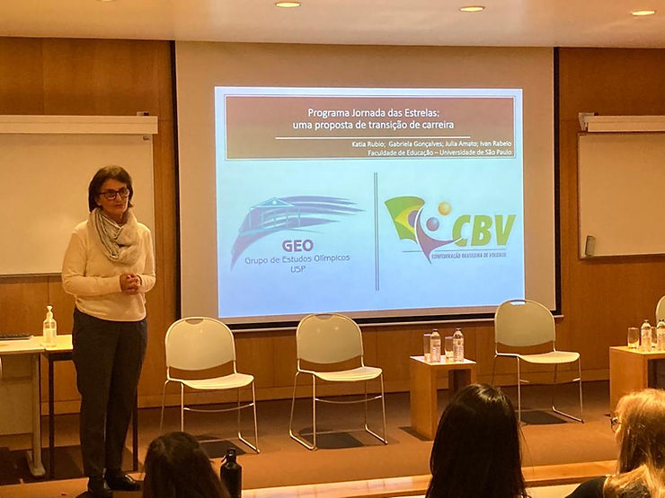
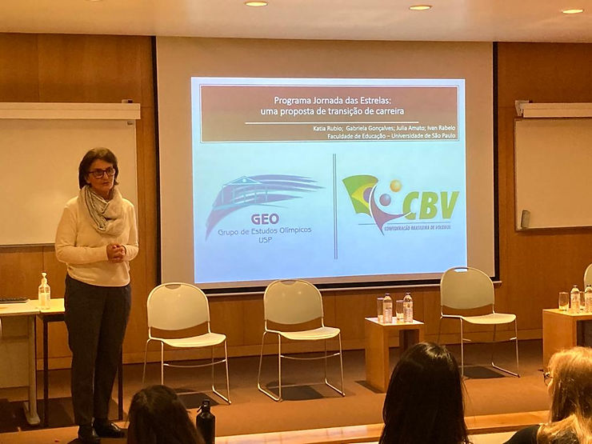
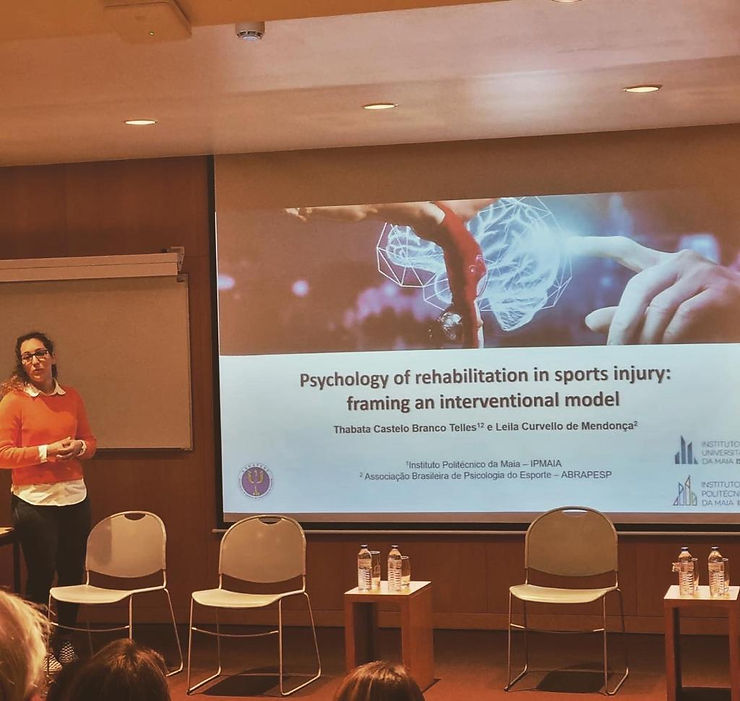
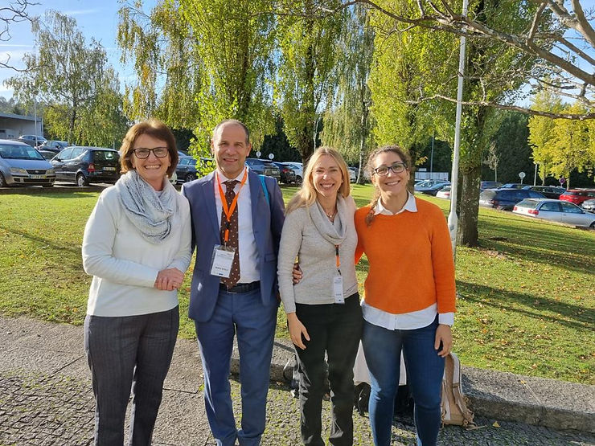
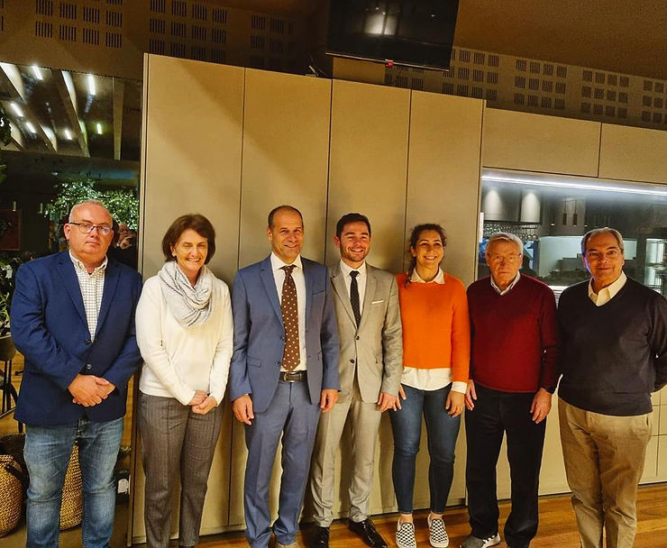

Entre os dias 2 a 5 de novembro, ocorreu a “XXIII Jornadas da Sociedade Portuguesa de Psicologia do Desporto” (SPPD). Este ano a SPPD juntou forças e interesses a outros eventos ibéricos de referência, como o X Galego-Português, da Asociacion Galega de Psixoloxia da Actividade Física e Deporte, e o IV Luso-andaluz de Psicología de la Actividad Física y el Deporte, da Asociación de Psicología del Deporte de Andalucía. O evento tem como objetivo apresentar a qualidade cientifica à respeito da Psicologia do Esporte que se realiza nos dois países Portugal e Espanha – contando com cientistas e profissionais de diversos países do mundo, além de proporcionar momentos de reflexão acerca da atividade profissional dos psicólogos do desporto.
Neste ano, o evento ocorreu no Instituto Politécnico da Maia – IPMAIA/ Universidade da Maia – (ISMAI), em Maia, Portugal e contou com alguns importantes nomes da ABRAPESP: Kátia Rubio (presidente fundadora da ABRAPESP 2003-2009), Thabata Telles (presidente gestão 2020/2021 e atual vice-presidente), Leila Mendonça, Julia Amato, Gabriela Gonçalves e Ivan Rabelo.
Kátia apresentou o trabalho sobre o Programa de Transição de Carreira da Confederação Brasileira de Voleibol (CBV) – Jornada das Estrelas, em parceria com os associados Julia Amato, Gabriela Gonçalves e Ivan Rabelo. Em depoimento: “Para mim foi um momento muito particular porque foi meu primeiro evento presencial depois da pandemia e eu pude encontrar vários colegas de Portugal e Espanha que participaram do evento. Pessoas que participaram de vários congressos da ABRAPESP como Sidonio Serpa, Joaquin Dosíl, da Sipid, além de colegas das Universidades de Motricidade Humana de Lisboa”

Nossa vice-presidente, Thabata Telles, em parceria com a associada Leila Mendonça, apresentou o trabalho intitulado: “Psychology of rehabilitation in sports injury: framing an interventional model”. Ela nos conta a importância do evento aos seus olhos: “Feliz pelo retorno dos eventos presenciais e por poder estar representando a ABRAPESP justamente no local onde hoje sou professora e por apresentar o primeiro trabalho sobre um tema que tem sido meu objeto de interesse mais recente: a compreensão do atleta e do movimento em situações de lesão esportiva.”

Atualmente, a psicologia no contexto esportivo enquanto ciência e profissão têm ganhado maior visibilidade no cenário mundial. A participação de nossos associados em eventos internacionais, além de proporcionar grande riqueza na troca de conhecimentos, oportuniza maior visibilidade de entidades como a ABRAPESP, representando a Psicologia do Esporte do Brasil no contexto internacional.

Na foto; da direita para a esquerda: Thabata, Rita de Oliveira da London South Bank University, UK; o presidente da FEPSAC, Maurizio Bertollo e Katia.

Na imagem, os representantes de entidades nacionais e internacionais de psicologia do esporte. Da direita para a esquerda: o ex-presidente da ISSP Sidónio Serpa; o ex-presidente da Sociedade Portuguesa de Psicologia do Desporto, José Alves; a ex-presidente da e atual vice-presidente da ABRAPESP, Thabata Telles; o recém-eleito presidente da Sociedade Portuguesa de Psicologia do Desporto, Pedro Teques; o presidente da FEPSAC, Maurizio Bertollo; a Katia Rubio, ex-presidente da ABRAPESP e o presidente da Federación Espanhola de Psicología del Deporte, David Peris.
Para saber mais, acesse: https://www.ipmaia.pt/pt/eventos/Jornadas-2022